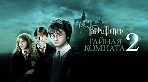
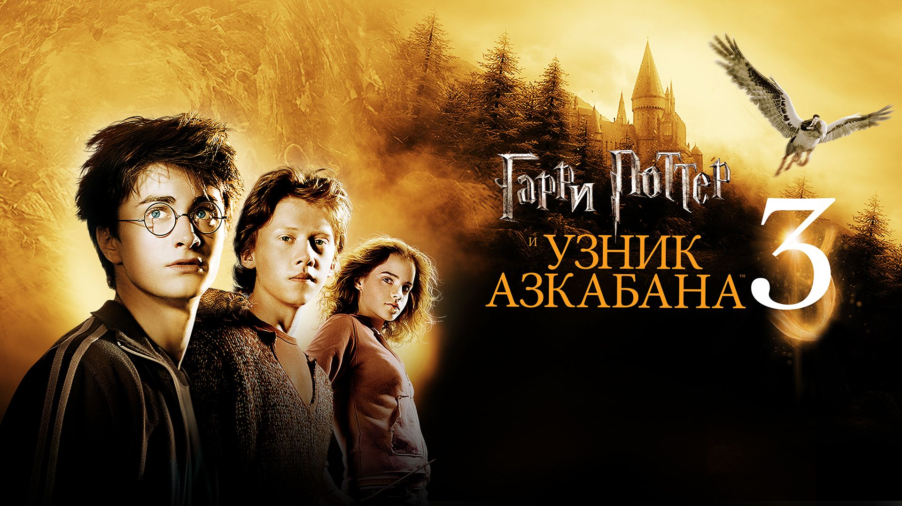
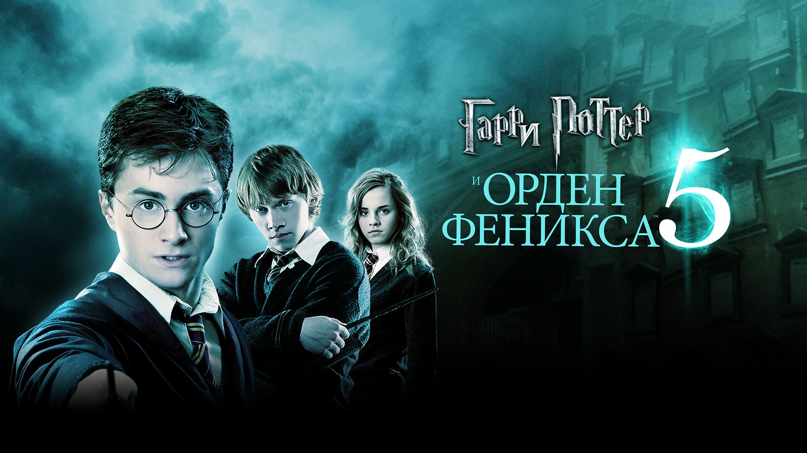

Гарри Поттер и философский камень

Первая книга серии, где Гарри узнает, что он волшебник, и поступает в Хогвартс. Начинается его путь в мир магии.
Гарри Поттер и Тайная комната
Вторая часть приключений, где Хогвартс оказывается под угрозой из-за таинственного монстра, скрывающегося в школе.
Гарри Поттер и узник Азкабана
Гарри встречает Сириуса Блэка, сбежавшего из тюрьмы Азкабан, и узнает правду о прошлом своих родителей.
Гарри Поттер и Кубок огня

Турнир трех волшебников возвращается в Хогвартс, но за этим скрывается темный замысел Возвращения Волан-де-Морта.
Гарри Поттер и Орден Феникса
Министерство магии отрицает возвращение Волан-де-Морта, а Гарри создает Отряд Дамблдора для подготовки к битве.
Гарри Поттер и Принц-полукровка

Гарри находит учебник зельевара, помеченный как собственность "Принца-полукровки", и готовится к финальной битве.